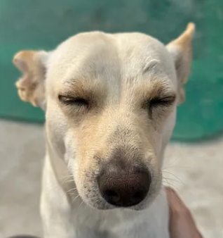
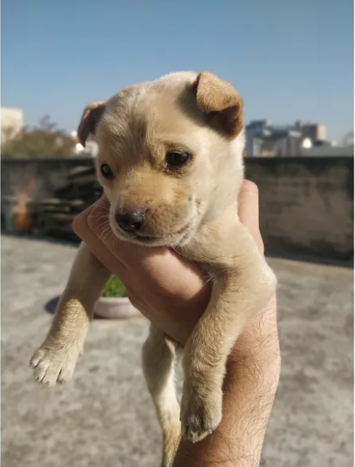

Writing
Thoughts, insights, and reflections on technology, life, and everything in between.

|
I hit 1,000+ citations on Google Scholar, a milestone that reflects over five years of steady research effort—reading, building, writing, and learning from rejections. Starting in undergrad, I taught myself machine learning, joined research groups, balanced projects with classes and jobs, and kept pushing even when things didn’t go as planned. I learned that consistency, collaboration, and patience matter more than quick wins. |
|  |
In this article, I share how raising my puppy Basanti taught me what true resilience looks like. From teaching her first bark and protecting her from disease, to the day she fell and broke her legs, I witnessed her refuse to stay down and recover step by step. Despite her physical challenges, she kept getting up, learning to walk, and later even run again. Basanti’s spirit reshaped how I understand strength, persistence, and unconditional determination—reminding me that resilience isn’t about perfection, but the courage to rise after every fall. |
|  |
In this article, I tell the story of how a tiny, shivering puppy wandered into my life on a cold February morning just as I was preparing for a standup call. I found her alone and frail, fed her, and soon learned she had difficulty walking. I brought her inside, named her Basanti, and over the day my family rallied around her. What began as a chance moment quickly turned into love and responsibility, and Basanti became a cherished part of our family—mischievous, beloved, and impossible to imagine life without. |
|
In this article, I reflect on my personal journey of ambition, struggle, and perseverance through graduate life, balancing tough coursework, jobs, and emotional ups and downs. I wrote this for my future self to remember what it felt like to push through frustration, doubt, and setbacks while still chasing meaningful success. My message is simple: growth isn’t linear, effort doesn’t always show immediate results, and perseverance matters—not just for outcomes, but for the strength you gain along the way. I hope others can relate and find courage in their own journey. |
|

|
In this article, I share how I navigated the competitive path from applying to USC to joining the USC Information Sciences Institute (ISI) as a research assistant. Over 1.5 years, I worked on projects from text-based agents to VQA, learned to write and publish strong papers (including a Best Student Paper award), and grew as a researcher through collaborations and challenges. Leaving ISI was bittersweet, but the experience profoundly shaped my skills and perspective. |